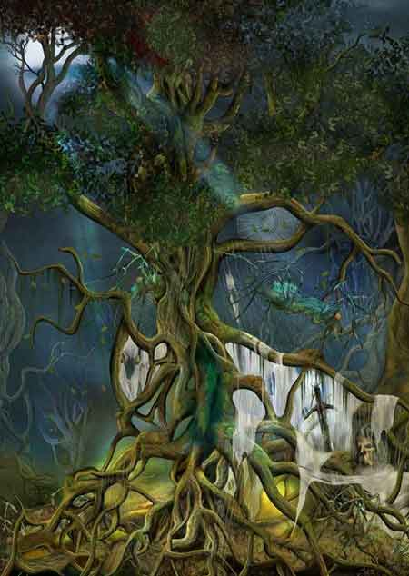

| Climate/Terrain | Foreste Temperate |
| Frequency | Uncommon |
| Organization | Group (Nest) |
| Activity Cycle | Any |
| Diet | Carnivoro |
| Intelligence | Animal (1) |
| Treasure | Vedi Sotto |
| Alignment | Neutral |
| No. Appearing | 2d3+1 |
| Armor Class | 5 |
| Movement | 12 |
| Hit Dice | 3 |
| Thac0 | 18 |
| No. of Attacks | 1 Morso |
| Damage / Attacks | 1d6 |
| Special Attacks | Veleno |
| Special Defenses | Ragnatele, Mimetizzazione |
| Magic Resistance | Nessuna |
| Size | Medium (1,50 m. di diametro) |
| Morale | Steady (11) |
| XP value | 130 |
Descrizione
I Ragni Verdi delle Foreste sono ragni giganti predatori che aspettano con pazienza le loro vittime nei cespugli o sugli alberi. Il loro carapace varia dal verde chiaro al verde scuro ed è camaleontico potendo risultare simile alla vegetazione circostante sia per il colore sia per le sporgenze a forma di foglie di cui è dotato.
Combat
I Ragni Verdi delle Foreste sono cacciatori sedentari. Aspettano mimetizzati la loro vittima totalmente immobili, per questo motivo, se incontrati nella foresta, ambiente che rappresenta il loro habitat, risulta molto difficile distinguerli dagli alberi e dal sottobosco fino a che non si siano mossi. Si tenga presente che vi sono solo 3 possibilità su 10 di incontrarli mentre si aggirano non camuffati nelle foreste in attesa delle vittime.
MIMETIZZAZIONE INFERIORE [FORESTE] (Lesser Special Ability): Quando la creatura resta ferma è capace di mimetizzarsi nell'ambiente indicato. In particolare, fino a che resta ferma costei non potrà essere notata dalle creature che passino ad una distanza superiore a 30 metri ed otterrà una possibilità pari al 65% di non essere notata dalle creature che le passano ad una distanza inferiore. Utilizzare quest'abilità richiede un'azione complessa dalla durata dell'intero round e la creatura potrà risultare, quindi, nascosta solo alla fine del round. Per restare nascosta la creatura non potrà compiere altre azioni complesse e non potrà spostarsi (si faccia eccezioni per piccoli movimenti effettuati sul posto). Si noti che questa abilità non può essere utilizzata nei confronti di chi ha già visto la creatura fino a che questa non esce dalla sua linea visiva. Si noti che il tiro percentuale è effettuato segretamente dalla creatura un'unica volta ed il suo risultato sarà applicato a qualsiasi soggetto fino a che costei non si sposti od agisca diversamente. Il risultato di questo tiro si considererà incrementato di una penalità del +10% al fine di verificare se la creatura si è nascosta nei confronti di soggetti dotati di Sensi Superiori o che posseggano la competenza Observation ed abbiano superato una prova nella stessa (+15% nei confronti delle creature che abbiano entrambe le caratteristiche). Il risultato del tiro si considererà incrementato di un'ulteriore penalità del +25% al fine di verificare se la creatura si è nascosta nei confronti di soggetti dotati di infravisione (che sia attiva e sempre che la creatura si trovi all'interno del suo raggio). Qualora la creatura risulti nascosta con successo alla vista dei suoi avversari ed agisca improvvisamente costei imporrà loro una penalità di -3 alla relativa prova sulla sorpresa.
Veleno: I Ragni Verdi delle Foreste attaccano con il loro morso che provoca 1d6 danni da taglio ed inietta un veleno dannoso per le loro vittime: Onset 1d3 rounds, Effetti 0/9, Delay 3, Tiro Salvezza senza modificatori, Assuefazione nessuna.
Ragnatele:
I Ragni Verdi
delle Foreste producono una densa ragnatela biancastra che nascondono
accuratamente nel loro territorio camuffandola tra le frasche ed il fogliame.
Questi ragni giganti, dunque, aspettano le loro vittime nascoste nei pressi di
tali ragnatele. Quando si incontrano questi ragni
vi sono 4 possibilità su 6 che
gli stessi abbiano deposto e nascosto le ragnatele.
Qualora vi siano le ragnatele per determinare la loro presenza
in un raggio di 24 metri
dalla zona di incontro si tiri 1d6 per ogni 3 metri, con un risultato pari ad 1
in quella zona vi saranno le ragnatele. Un personaggio che dichiara di osservare
attentamente la presenza delle ragnatele (azione che richiede un intero round)
può effettuare una prova di osservare con penalità di -1. Se la prova riesce, il
personaggio avrà individuato la presenza di eventuali ragnatele si trovino entro
9 metri di distanza dallo stesso nel suo arco di vista frontale. Una creatura che finisce nelle ragnatele resterà
invischiata qualora non superi un tiro salvezza contro pietrificazione. Se il tiro salvezza fallisce, il personaggio non
potrà spostarsi dalla zona delle ragnatele e subirà una penalità di -2 ai tiri
per colpire, ai tiri salvezza ed alle prove di agilità. Inoltre i ragni che lo
attaccano riceveranno un bonus di +2 al tiro per colpire. Per liberarsi dalla
ragnatela (si considera un'azione complessa che costa 1 punto fatica) occorre
superare un tiro salvezza contro pietrificazione con penalità di -1 (tiro modificato
dal bonus ai danni che la creatura possiede per la sua forza), il tentativo può
essere ripetuto ogni round. Le creature Large ottengono un bonus ulteriore di +2
al tiro salvezza mentre quelle di dimensioni Huge o superiori sono immuni agli
effetti della ragnatela.
Si noti che questi ragni possono attraversare le zone di
foreste e la ragnatele senza alcuna penalità di movimento e senza il rischio di
restare invischiati.
Habitat/Society
I Ragni Verdi delle Foreste sono ragni giganti che vivono nelle foreste. Questi ragni scelgono una zona di caccia e dopo aver preparato e nascosto le ragnatele si nascondono in attesa delle prede. Appena una creatura finisce nelle ragnatele, si accorge della presenza dei ragni o si avvicina a distanza di attacco (9 m.) i ragni presenti nella zona usciranno allo scoperto per attaccarla. Periodicamente queste creature che vivono in piccoli gruppi si spostano per stanziarsi in una diversa zona sempre all'interno della foresta.
Ecology
I Ragni Verdi delle Foreste sono predatori pericolosi. Cacciano creature di taglia media e di taglia larga lasciando passare creature più grosse o pericolose. Questi ragni producono uova dal colore verde brillante che nascondono al centro della loro zona di caccia sotto fogliame ed arbusti. Vi è il 30% di possibilità di trovare 2d4 uova durante qualsiasi periodo dell'anno. Queste uova che pesano 2 lbs. hanno un valore di mercato di circa 30 g.p. l'una.
Tesoro
I Ragni Verdi delle Foreste conservano i cadaveri delle loro vittime e gli oggetti che attirano la loro attenzione deponendoli al centro della loro zona di caccia dove poi deporranno le uova. Per tale motivo si consulti la seguente tabella per determinare oggetti eventualmente presenti nel nido dei ragni:
| % di ritrovamento | TIPOLOGIA | Ammontare ritrovato |
| 10% | Gemme | 1d3 |
| 50% | Monete d'oro | 1d20+10 |
| 50% | Monete d'argento | 2d20+20 |
| 50% | Monete di rame | 3d20+30 |
| 5% | Oggetto magico | 1 |
| 25% | Arma | 1d2 |
| 20% | Armatura | 1 |